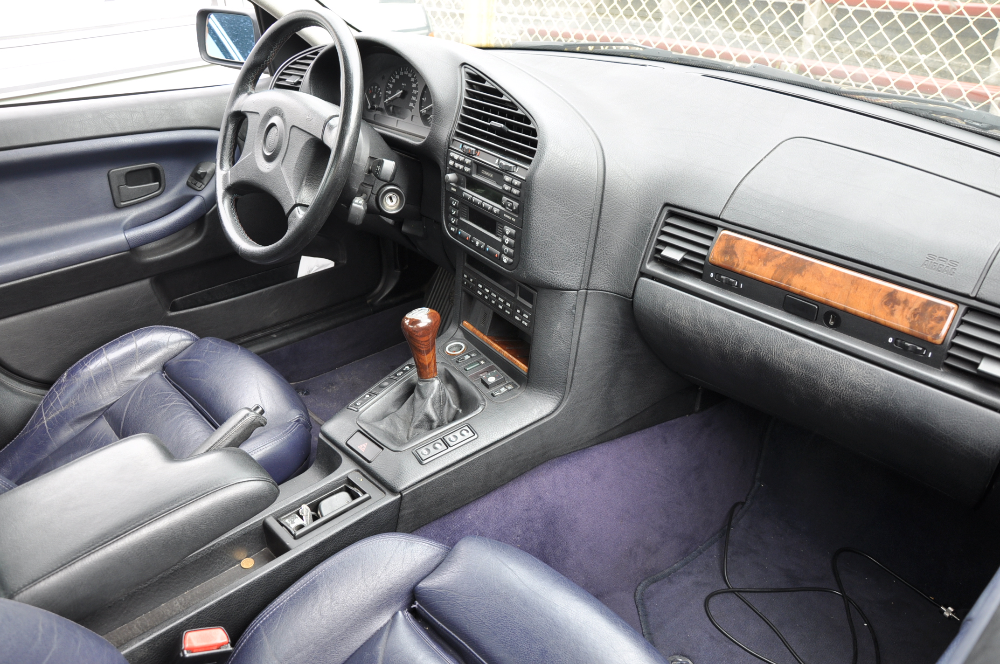
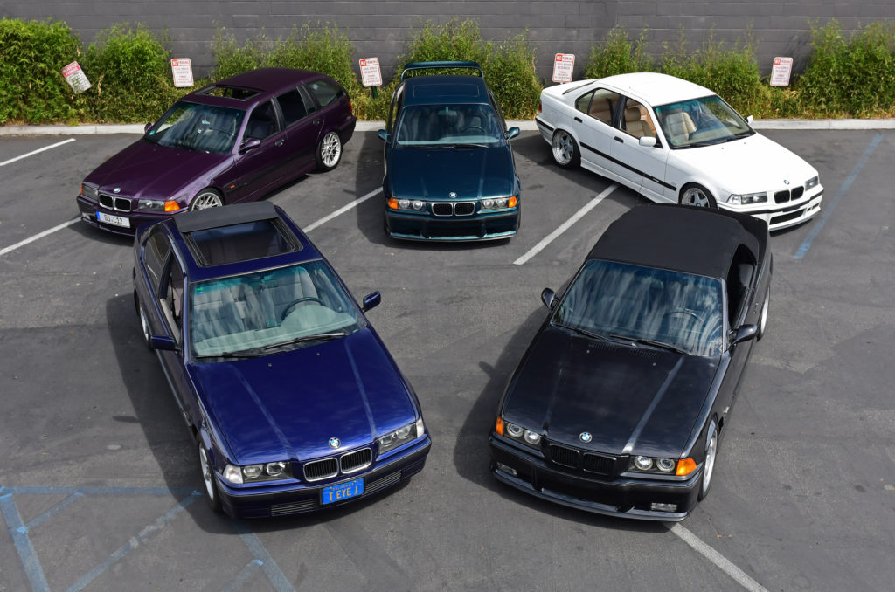

A treia generație (E36; 1990)
A treia generație a gamei BMW Seria 3 de mașini executive compacte este desemnată sub codul modelului E36 și a fost produsă de producătorul German de automobile BMW din 1990 până în 2000. Modelele inițiale au fost de tip sedan cu patru uși, urmate de coupe, decapotabil, wagon ("Touring"), hatchback ("Compact") și rarul decapotabil cu patru uși Baur TC4 în anii următori.
E36 a fost prima serie 3 care a fost oferită într-un stil de caroserie hatchback. A fost, de asemenea, prima serie 3 disponibilă cu o transmisie manuală cu șase trepte (în 1996 M3), o transmisie automată cu cinci trepte și un motor diesel cu patru cilindri. Suspensia spate multi-link a fost, de asemenea, un upgrade semnificativ în comparație cu generațiile anterioare ale Seriei 3. Tracțiunea integrală nu a fost disponibilă pentru e36, spre deosebire de generațiile anterioare (E30) și succesive (E46).
E36 a fost numit în lista 10 Best a revistei Car and Driver pentru fiecare an în care a fost vândut.
În urma introducerii succesorului său, seria E46 3 în 1998, E36 a început să fie eliminat treptat și a fost în cele din urmă înlocuit în 1999.
Dezvoltarea
Dezvoltarea modelului E36 a început în 1981 iar designul exterior a fost puternic influențat de aerodinamică, în special de forma generală a penei, capacele farurilor și oglinzile laterale mai mici. Designerii principali au fost Pinky Lai și Boyke Boyer.
Versiunea de producție a E36 a fost lansată în octombrie 1990, cu un comunicat de presă în noiembrie și lansarea pe piață la începutul anului 1991.
Stiluri de caroserie

- Sedan cu 4 uși, produs din 1990 până în 1998.
- Coupe cu 2 uși, produs din 1990 până în 1999.
- Decapotabilă cu 2 uși, produsă din 1993 până în 1999. A fost disponibilă și o conversie Baur "Top cabriolet" cu 4 uși.
- Wagon cu 5 uși (comercializat sub numele de "Touring"), produs între 1994 și 1999.
- Hatchback cu 3 uși (Seria 3 Compact), produs din 1994 până în 2000.
Echiparea
Echipamentele de siguranță disponibile includ un airbag pentru șofer, airbag pentru pasager (din producția din 1993) și airbag-uri cu impact lateral la modelele ulterioare, frânare ABS și control al stabilității ("ASC +T"). Controlul electronic al climatizării a fost disponibil și pe E36.
Suspensia
Modelele sedan, coupe, cabrio și touring utilizează suspensia multilink "z-axle" în spate, care a fost introdusă în BMW Z1 roadster. Modelele hatchback ("Compact") utilizează o suspensie cu braț semi-trailing spate bazată pe designul mai vechi al seriei 3 E30. Acest lucru a fost făcut pentru a economisi spațiu datorită capătului din spate trunchiat al hatchback-ului.
Producția
E36 a fost produs în Munchen, Germania; Regensburg, Germania; Rosslyn, Africa de Sud; și Spartanburg County, Carolina de Sud, Statele Unite. Asamblarea locală a kiturilor (CKD) a fost utilizată pentru mașinile vândute în Uruguay (până în 1991), Egipt, Mexic și Thailanda. E36 a fost, de asemenea, construit ca kituri CKD în Filipine începând din 1994 până în 1997, unde producția s-a oprit din cauza crizei financiare asiatice din 1997.